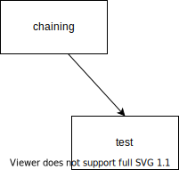

Rather than blog https://softwareandcarboncapture.wordpress.com, a more wiki-like site may be better for Carbon Capture to Methanol https://co2-ch3oh.pages.dev/
Unicode table generated by javascript instead of asciitable.com and check 300 unicode ranges 